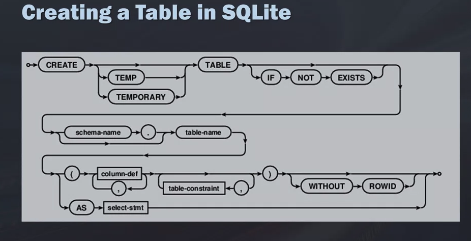

Search SQL Queries
| Title | Command |
|---|---|
| Select statement | SELECT prod_name, prod_id, prod_price FROM Products; SELECT * FROM Products; (asterisk (*) wildcard character for all columns) |
| LIMIT in select statement |
SQLite SELECT prod_name FROM Products LIMITS 5; Oracle SELECT prod_name FROM Products WHERE ROWNUM <=5; DB2 SELECT prod_name FROM Products FETCH FIRST 5 ROWS ONLY; |
| CREATE TABLE |
CREATE TABLE Shoes ( Id char(10) PRIMARY KEY, Brand char(10) NOT NULL, Type char(250) NOT NULL, Color char(250) NOT NULL, Price decimal(8, 2) NOT NULL, Desc Varchar(750) NULL ); Note
|
| Adding/Inserting Data to the Table |
INSERT INTO Shoes VALUES('14535974', 'Gucci', 'Slippers', 'Pink', '695.00', NULL); Above query works but not recommended INSERT INTO Shoes (Id, Brand, Type, Color, Price, Desc) VALUES ('14535974', 'Gucci', 'Slippers', 'Pink', '695.00', NULL); More Recommended : It's Safe and you have more control, You know exactly where the data is going and into which column. |
| Temporary Tables |
Create copy of another table
pulling subset table from Shoes table . CREATE TEMPORARY TABLE Sandals AS( SELECT * FROM shoes WHERE shoe_type = 'sandals' )  |
| commig | git commit -m "msg for commit" |
| git history | git log |
Structured Query Language(SQL) is a standard computer language for relational database management and data manipulation
Organizes the structures information into multiple, related tables.
Can represent a business process or shows relationships between business processes